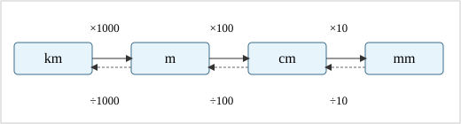

<script>if(location.hostname.endsWith('onrender.com'))location.replace('https://math-sandbox.pages.dev'+location.pathname+location.search+location.hash)</script>
<section class="theory" data-section="IGCSE-13.1">
<h2>13.1 Understanding units</h2>
<p class="src">Based on Cambridge IGCSE Mathematics Core and Extended Coursebook, 3rd edition (Karen Morrison and Nick Hamshaw), Chapter 13 Understanding measurement, printed pp.401–404 (metric conversion tables on p.402, Worked example 1 style on p.403, and Exercise 13.1). Printed pages were read from rendered scans of part_040 (pp.401–403) and part_041 (p.404). Own wording and new numbers.</p>
<p class="key-words"><strong>Key words:</strong> <em>metric</em>, <em>conversion</em>, <em>unit</em></p>
<h3>Metric units</h3>
<p>A <strong>unit</strong> is the standard used to measure a quantity, such as length, mass or capacity. In the <strong>metric</strong> system, named units are linked by powers of ten. To change from one unit to another you use a <strong>conversion</strong> factor: multiply when you move to a smaller unit, and divide when you move to a larger unit.</p>
<ul>
<li>Length: \(1\,\mathrm{km}=1000\,\mathrm{m}\), \(1\,\mathrm{m}=100\,\mathrm{cm}\), \(1\,\mathrm{cm}=10\,\mathrm{mm}\).</li>
<li>Mass: \(1\,\mathrm{t}=1000\,\mathrm{kg}\), \(1\,\mathrm{kg}=1000\,\mathrm{g}\), \(1\,\mathrm{g}=1000\,\mathrm{mg}\).</li>
<li>Capacity: \(1\,\mathrm{l}=1000\,\mathrm{ml}\) and also \(1\,\mathrm{l}=1000\,\mathrm{cm}^3\), so \(1\,\mathrm{ml}=1\,\mathrm{cm}^3\).</li>
</ul>
<p>Area and volume conversions use the same length factors twice or three times. For example, \(1\,\mathrm{m}^2=100\times 100=10\,000\,\mathrm{cm}^2\) and \(1\,\mathrm{m}^3=100\times 100\times 100=1\,000\,000\,\mathrm{cm}^3\). A useful check is that a larger unit gives a smaller number, and a smaller unit gives a larger number.</p>
<figure><figcaption>Length units are linked by powers of ten. Multiply to change to a smaller unit and divide to change to a larger unit.</figcaption></figure>
<div class="worked-example">
<h4>Worked example 1: Length and area conversions</h4>
<p class="src">Book: Worked example 1 style, printed p.403 (express 5 km in cm, 3.2 cm in m, and \(2\,000\,000\,\mathrm{cm}^2\) in m\(^2\)). New numbers.</p>
<p>Express each quantity in the unit given.</p>
<p>(a) \(4.6\,\mathrm{km}\) in cm<br/>(b) \(8.5\,\mathrm{cm}\) in m<br/>(c) \(3\,200\,000\,\mathrm{cm}^2\) in m\(^2\)</p>
<ol class="steps">
<li>(a) \(1\,\mathrm{km}=1000\,\mathrm{m}\) and \(1\,\mathrm{m}=100\,\mathrm{cm}\), so \(1\,\mathrm{km}=100\,000\,\mathrm{cm}\). Therefore \(4.6\,\mathrm{km}=4.6\times 100\,000=460\,000\,\mathrm{cm}\) <span class="mark">B1</span></li>
<li>(b) \(100\,\mathrm{cm}=1\,\mathrm{m}\), so \(8.5\,\mathrm{cm}=8.5\div 100=0.085\,\mathrm{m}\) <span class="mark">B1</span></li>
<li>(c) \(1\,\mathrm{m}^2=100\times 100=10\,000\,\mathrm{cm}^2\), so \(3\,200\,000\,\mathrm{cm}^2=3\,200\,000\div 10\,000=320\,\mathrm{m}^2\) <span class="mark">B1</span></li>
</ol>
<p class="final"><strong>Answer:</strong> (a) \(460\,000\,\mathrm{cm}\); (b) \(0.085\,\mathrm{m}\); (c) \(320\,\mathrm{m}^2\)</p>
</div>
<div class="worked-example">
<h4>Worked example 2: Capacity and standard form</h4>
<p class="src">Book: Exercise 13.1 Q6 style, printed p.403 (volume conversions, including standard form). New numbers.</p>
<p>Change \(40\,\mathrm{cm}^3\) into litres. Give your answer in standard form.</p>
<ol class="steps">
<li>\(1\,\mathrm{l}=1000\,\mathrm{cm}^3\), so \(40\,\mathrm{cm}^3=40\div 1000=0.04\,\mathrm{l}\) <span class="mark">M1</span></li>
<li>\(0.04=4\times 10^{-2}\), so the volume is \(4\times 10^{-2}\) litres <span class="mark">A1</span></li>
</ol>
<p class="final"><strong>Answer:</strong> \(4\times 10^{-2}\) litres</p>
</div>
<h3>Common mistakes</h3>
<ul>
<li>Using a length factor once when converting an area or a volume (for example, dividing by \(100\) instead of \(10\,000\) to change \(\mathrm{cm}^2\) into \(\mathrm{m}^2\)).</li>
<li>Multiplying when the new unit is larger, or dividing when the new unit is smaller.</li>
<li>Treating \(1\,\mathrm{l}=1\,000\,000\,\mathrm{cm}^3\). One litre is \(1000\,\mathrm{cm}^3\), not one cubic metre.</li>
</ul>
<h3>Quick checks</h3>
<div class="quick-check">
<h4>Quick check 1</h4>
<p>Change \(6\,\mathrm{km}\) into metres.</p>
<details><summary>Worked solution</summary>
<ol class="steps">
<li>\(1\,\mathrm{km}=1000\,\mathrm{m}\), so \(6\,\mathrm{km}=6\times 1000=6000\,\mathrm{m}\) <span class="mark">A1</span></li>
</ol>
<p class="final"><strong>Answer:</strong> \(6000\)</p>
</details>
</div>
<div class="quick-check">
<h4>Quick check 2</h4>
<p>Change \(3\,\mathrm{m}^2\) into square centimetres.</p>
<details><summary>Worked solution</summary>
<ol class="steps">
<li>\(1\,\mathrm{m}^2=100\times 100=10\,000\,\mathrm{cm}^2\), so \(3\,\mathrm{m}^2=3\times 10\,000=30\,000\,\mathrm{cm}^2\) <span class="mark">A1</span></li>
</ol>
<p class="final"><strong>Answer:</strong> \(30000\)</p>
</details>
</div>
<div class="quick-check">
<h4>Quick check 3</h4>
<p>Change \(5000\,\mathrm{cm}^3\) into litres.</p>
<details><summary>Worked solution</summary>
<ol class="steps">
<li>\(1\,\mathrm{l}=1000\,\mathrm{cm}^3\), so \(5000\,\mathrm{cm}^3=5000\div 1000=5\) litres <span class="mark">A1</span></li>
</ol>
<p class="final"><strong>Answer:</strong> \(5\)</p>
</details>
</div>
<p class="marks-key"><strong>Marks:</strong> M = method, A = accurate answer (depends on M), B = independent mark. Leave exact values exact, and use standard form only when it is asked for.</p>
</section>
